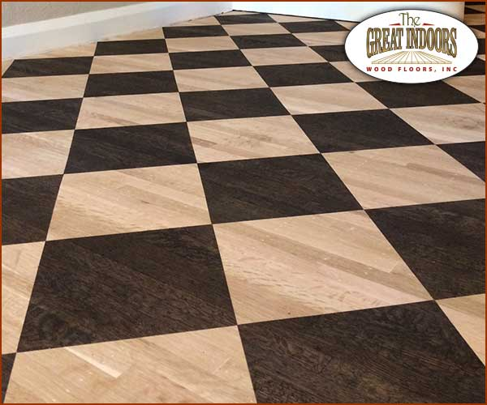
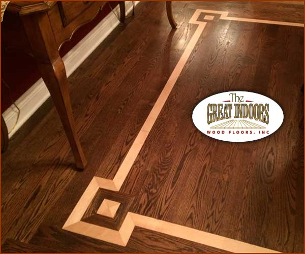
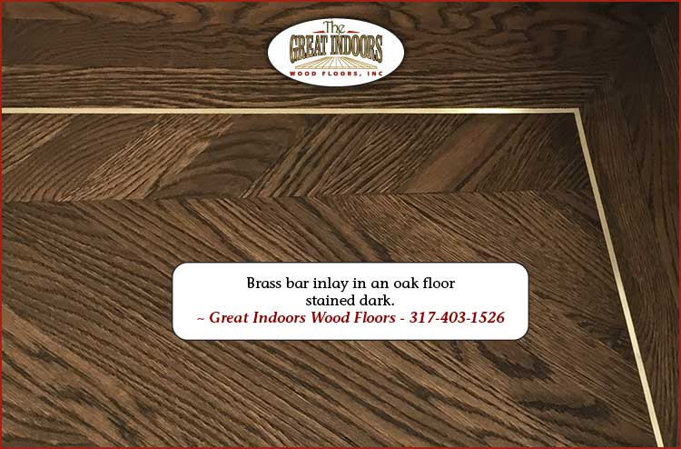
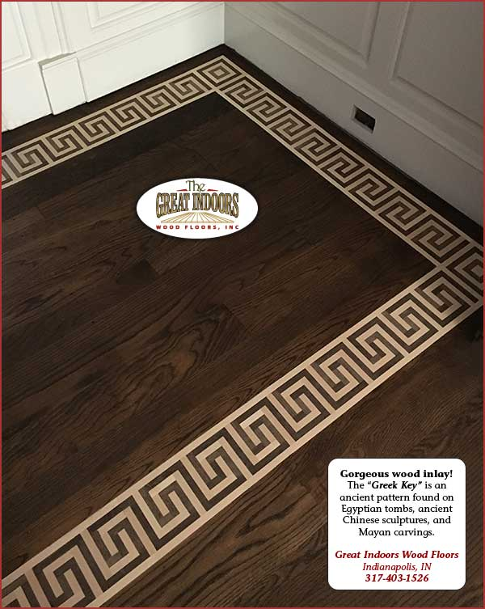

Inlays and mosaics, made entirely by hand
Refinishing makes hardwood look its best. Brian Depp takes floors further: custom borders, medallions, and mosaics in exotic woods, every piece cut and set by hand.

From really nice floors to works of art
Using a variety of exotic woods, we make custom borders around fireplaces and other room features, create original designs, and even replicate artwork of your choosing.
A picture is worth 1000 words. Browse the photos below and come up with your own idea of what would look great in your home.
The look without the permanence
Not ready to commit to an inlay? A stained border or pattern adds a real feature to a room without the permanence or expense.
We create checkerboards, borders, and other effects using nothing but wood stain and a steady hand, right on your floor.
Curious what colors are possible? Browse our stain colors page.




Brass inlays, and inlays that rescue floors
Wood isn't the only material we set into floors. Brass borders and Greek key patterns sit flush with the boards and catch the light.
An inlay can solve problems, too. One client removed a wall and the two floors didn't line up. A hand-made band joined them and saved real money.
Another time, a basket weave inlay stood in for a far more costly repair. The damage became the room's best feature.
Most inlays go in during a refinishing, while the wood is sanded raw. See more finished floors in our photo gallery, or look beyond floors at Brian's custom wood art.
Have an idea for your floor?
Call Brian to talk through a border, medallion, or full mosaic. Free consultations, and honest advice on what will work in your wood.